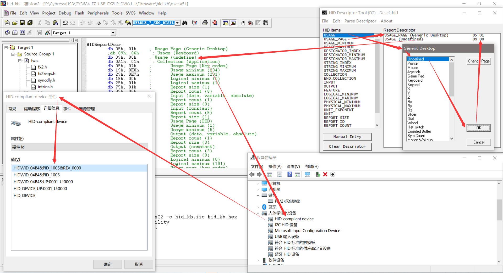
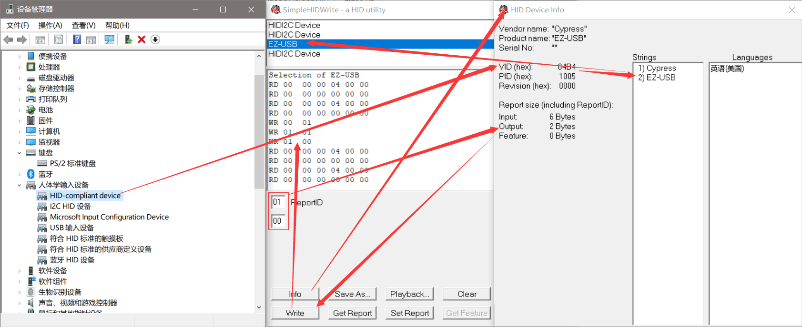
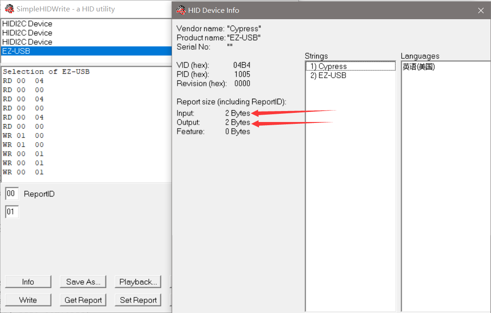
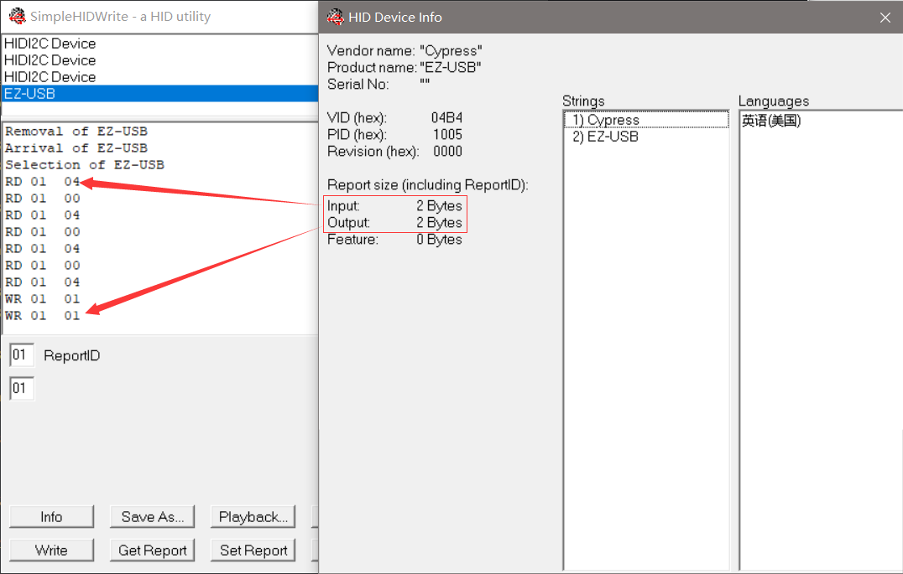

HID Compliant Deivce
HID兼容设备
参考文档
USB HID sniffer – Software (windows)
Download 1: https://github.com/downloads/bbeardsley/BuzzIO/0011_SimpleHIDWrite3.zip
Download 2: 0011_SimpleHIDWrite3.zip
Tutorial about USB HID Report Descriptors: 需要理解Report id，可以主要看Report id要怎么操作；
Modify Keyboard to Unknow Device
仅将HID Keyboard声明改成HID Unknow设备：
HIDReportDscr: db 05h, 01h ; Usage Page (Generic Desktop) ;db 09h, 06h ; Usage (Keyboard) db 09h, 00h ; Usage (undefine) db 0A1h, 01h ; Collection (Application) db 05h, 07h ; Usage Page (Key codes) db 19h, 0E0h ; Usage minimum (234) db 29h, 0E7h ; Usage maximum (231) db 15h, 00h ; Logical minimum (0) db 25h, 01h ; Logical maximum (1) db 75h, 01h ; Report size (1) db 95h, 08h ; Report count (8) db 81h, 02h ; Input (data, variable, absolute) db 95h, 01h ; Report count (1) db 75h, 08h ; Report size (8) db 81h, 01h ; Input (constant) db 95h, 05h ; Report count (5) db 75h, 01h ; Report size (1) db 05h, 08h ; Usage Page (LED) db 19h, 01h ; Usage minimum (1) db 29h, 05h ; Usage maximum (5) db 91h, 02h ; Output (data, variable, absolute) db 95h, 01h ; Report count (1) db 75h, 03h ; Report size (3) db 91h, 01h ; Output (constant) db 95h, 03h ; Report count (3) db 75h, 08h ; Report size (8) db 15h, 00h ; Logical minimum (0) db 25h, 65h ; Logical maximum (101) db 05h, 07h ; Usage page (key codes) db 19h, 00h ; Usage minimum (0) db 29h, 65h ; Usage maximum (101) db 81h, 00h ; Input (data, array) db 0C0h ; End Collection HIDReportDscrEnd:

SimpleHIDWrite读写： 
Modify HID Report Dscr
HID Report Dscr
HIDReportDscr: db 05h, 01h ; Usage Page (Generic Desktop) ;db 09h, 06h ; Usage (Keyboard) db 09h, 00h ; Usage (undefine) db 0A1h, 01h ; Collection (Application) db 05h, 07h ; Usage Page (Key codes) db 19h, 0E0h ; Usage minimum (234) db 29h, 0E7h ; Usage maximum (231) db 15h, 00h ; Logical minimum (0) db 25h, 01h ; Logical maximum (1) db 75h, 01h ; Report size (1) db 95h, 08h ; Report count (8) db 81h, 02h ; Input (data, variable, absolute) db 95h, 05h ; Report count (5) db 75h, 01h ; Report size (1) db 05h, 08h ; Usage Page (LED) db 19h, 01h ; Usage minimum (1) db 29h, 05h ; Usage maximum (5) db 91h, 02h ; Output (data, variable, absolute) db 95h, 01h ; Report count (1) db 75h, 03h ; Report size (3) db 91h, 01h ; Output (constant) db 0C0h ; End Collection HIDReportDscrEnd:
Deal With Report
void TD_Poll(void) // Called repeatedly while the device is idle { if( !(EP1INCS & bmEPBUSY) ) // Is the IN1BUF available, { buttons = PB0; buttons &= 0x01; if (((oldbuttons - buttons) != 0) && (keyStatus == KEY_UP) && (PB0 == 1)) //Change in button state { EP1INBUF[0] = 4; EP1INBC = 1; keyStatus = KEY_DOWN; } else if (((oldbuttons - buttons) == 0) && (keyStatus == KEY_DOWN) && (PB0 == 0)){ EP1INBUF[0] = 0; EP1INBC = 1; keyStatus = KEY_UP; } oldbuttons = buttons; } if( !(EP1OUTCS & bmEPBUSY) ) // Is there something available { PB2 = ~PB2; EP1OUTBC = 0; //Rearm endpoint buffer } }
Data Transfer 
从上可知，貌似我们没有设置Report id，接下来处理一下指定Report id；
Modify HID Report Dscr With Report ID
HID Report Dscr
HIDReportDscr: db 05h, 01h ; Usage Page (Generic Desktop) ;db 09h, 06h ; Usage (Keyboard) db 09h, 00h ; Usage (undefine) db 0A1h, 01h ; Collection (Application) db 85h, 01h ; Report id(1) db 05h, 07h ; Usage Page (Key codes) db 19h, 0E0h ; Usage minimum (234) db 29h, 0E7h ; Usage maximum (231) db 15h, 00h ; Logical minimum (0) db 25h, 01h ; Logical maximum (1) db 75h, 01h ; Report size (1) db 95h, 08h ; Report count (8) db 81h, 02h ; Input (data, variable, absolute) db 95h, 05h ; Report count (5) db 75h, 01h ; Report size (1) db 05h, 08h ; Usage Page (LED) db 19h, 01h ; Usage minimum (1) db 29h, 05h ; Usage maximum (5) db 91h, 02h ; Output (data, variable, absolute) db 95h, 01h ; Report count (1) db 75h, 03h ; Report size (3) db 91h, 01h ; Output (constant) db 0C0h ; End Collection HIDReportDscrEnd:
Deal With Report
void TD_Poll(void) // Called repeatedly while the device is idle { if( !(EP1INCS & bmEPBUSY) ) // Is the IN1BUF available, { buttons = PB0; buttons &= 0x01; if (((oldbuttons - buttons) != 0) && (keyStatus == KEY_UP) && (PB0 == 1)) //Change in button state { EP1INBUF[0] = 1; EP1INBUF[1] = 4; EP1INBC = 2; keyStatus = KEY_DOWN; } else if (((oldbuttons - buttons) == 0) && (keyStatus == KEY_DOWN) && (PB0 == 0)){ EP1INBUF[0] = 1; EP1INBUF[1] = 0; EP1INBC = 2; keyStatus = KEY_UP; } oldbuttons = buttons; } if( !(EP1OUTCS & bmEPBUSY) ) // Is there something available { PB2 = ~PB2; EP1OUTBC = 0; //Rearm endpoint buffer } }
Data Transfer 
结论：
如果没有设定Report id，那么第一个字节可以当作数据字节，不过系统会自动补这个字节；
如果设定了Report id，那么第一个字节是Report id，后面在跟数据，Report id需要手动填写；
Report id相当于对数据进行分类。